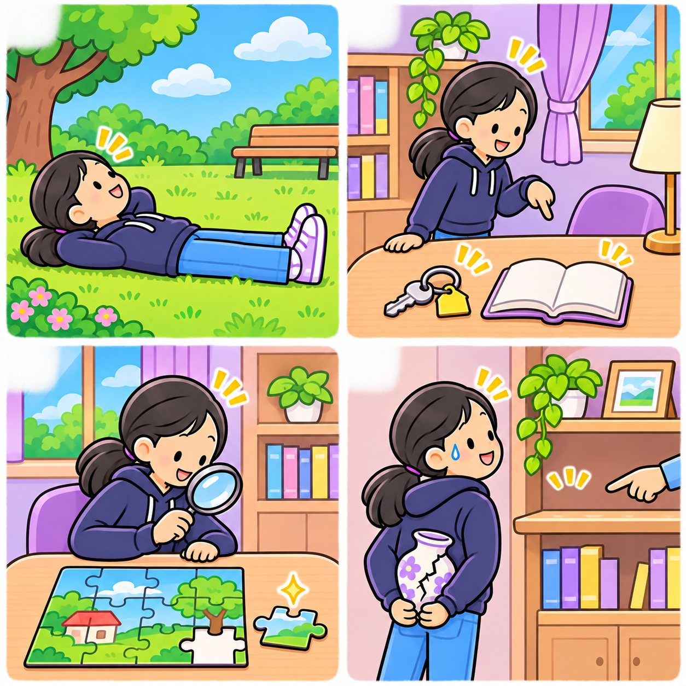
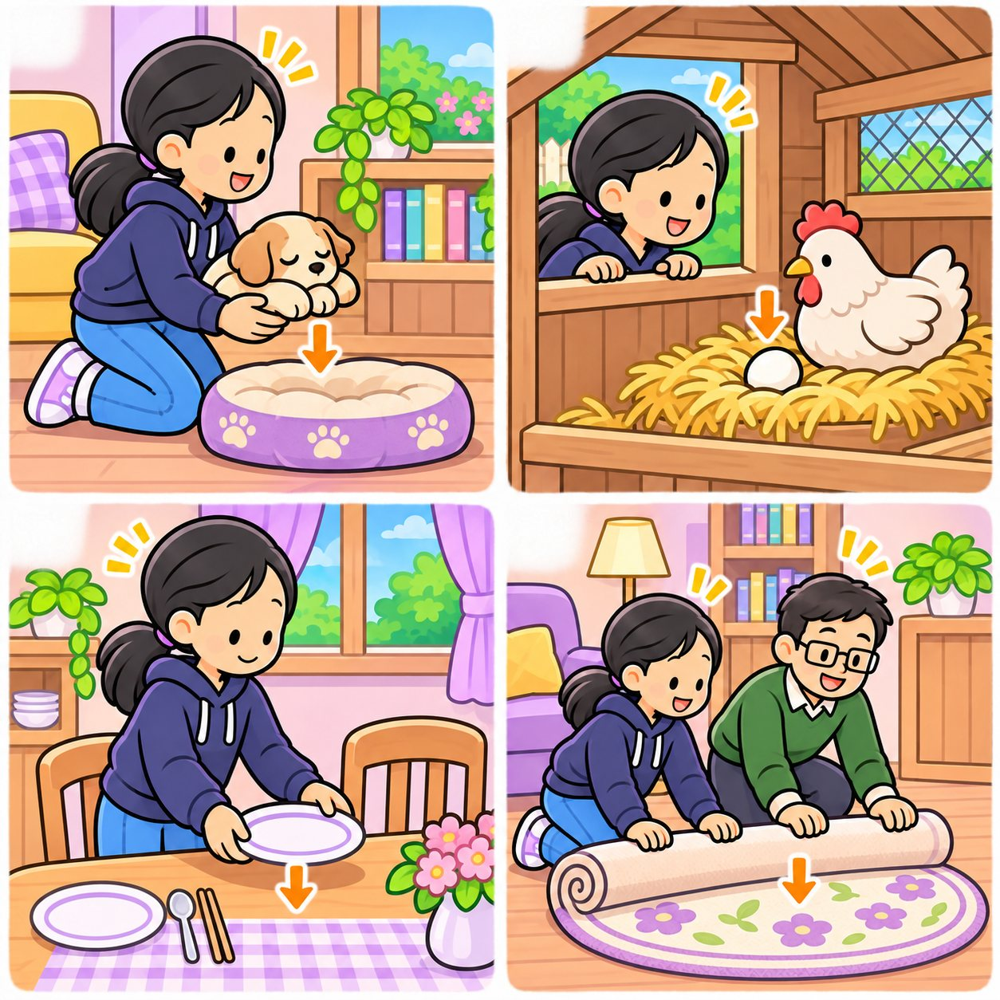

PART 1 · 놓고 다루고오른쪽 쪽은 가리고 먼저 해 봐요.
A이 문장, 무슨 뜻?
엄마가 마음에 드는 자전거를 보다가 고개를 저으며 이렇게 말했어요.
The problem lies in the price.
여기서 lie는 무슨 뜻?
저녁을 준비하던 아빠가 나에게 이렇게 부탁했어요.
Will you lay the table, please?
여기서 lay는 무슨 뜻?
B내가 아는 뜻흔히 외우는 뜻 말고 아는 뜻을 더 쓰고, 아래 단어는 뜻이 비슷하면 유 · 반대면 반
lie = 흔히 눕다 +
lie와rest()stand()
lay = 흔히 놓다 +
lay와place()pick up()
C영어로 써 보기lie · lay 중 알맞은 단어를 넣어요 · 힌트는 문장 순서대로, 동사는 기본형
- 1나는 소파에 누워서 TV를 봤다.I · on the sofa · and · watch TV
- 2암탉은 거의 매일 알을 하나 낳는다.the hen · an egg · almost every day
- 3나한테 거짓말하지 마.don’t · to me
- 4그는 지도를 탁자 위에 펼쳐 놓았다.he · the map · on the table
도움말lie(눕다) – lay – lain, lay(놓다) – laid – laid, lie(거짓말하다) – lied – lied. lie의 과거형과 lay가 모양이 같아요!
④ 강의READING 뒤에 강의 → 이 쪽 채점(해설 p.2) · 틀린 문장 다시 쓰기 → MAKE IT MINE
강의 보기
lie스스로 평평하게 누워 있어요

1234사람이 눕고, 열쇠가 놓여 있고, 답이 어딘가에 있어요 — 모두 그 자리에 가만히 누워 있는 그림이에요.In English lie = to be in a flat position on a surface
여러 가지 뜻굵은 단어 앞뒤를 보고 짐작해 써요
- 1
Lie on your back and relax.
등을 대고 긴장을 풀어.
- 2
Your keys are lying on the desk.
네 열쇠가 책상 위에 .
- 3
The secret lies in the sauce.
비결은 소스에 .
- 4
He lied about his age.
그는 자기 나이에 대해 .
유의어 · 반의어
- 유의어restRest here.여기서 쉬어.몸을 쉬게 해요. 꼭 눕지 않아도 돼요.
- 반의어standStand up.일어서.몸을 세워요. 누운 lie와 반대.
유recline비스듬히 기대다, be located위치해 있다반tell the truth사실대로 말하다
lay무엇을 평평하게 내려놓아요

1234강아지를 눕히고, 알을 낳고, 접시를 놓고, 카펫을 깔아요 — 모두 무엇을 아래로 내려놓는 그림이에요.In English lay = to put something down carefully
여러 가지 뜻
- 1
She laid the puppy on the cushion.
그녀는 강아지를 방석 위에 .
- 2
Most birds lay eggs in spring.
대부분의 새는 봄에 알을 .
- 3
Mom laid the table with her best plates.
엄마는 가장 좋은 접시로 상을 .
- 4
They laid a new carpet in the living room.
그들은 거실에 새 카펫을 .
유의어 · 반의어
- 유의어placePlace it here.여기에 놓아라.정해진 곳에 차분히 놓아요.
- 반의어pick upPick it up.그것을 집어 들어.들어 올려요. 내려놓는 lay와 반대.
유put down내려놓다, spread펼치다반lift들어 올리다
lie – lay – lain, lay – laid – laid. ‘누웠다’는 lay, ‘놓았다 · 깔았다’는 laid — 과거형에서 가장 많이 틀려요.
단어 · 예문 듣기
채점한 뒤 따라 읽어요
The Secret in the Sand모래 속의 비밀
NONFICTION 실제 이야기 · 동물 · 자연
본문 듣기
따라 읽어요
1밑줄 친 lie · lay 뒤 □에 뜻 번호를 써요 5곳
2빈칸 (a) (b) (c)에 알맞은 한 단어를 쓰고, 근거가 된 말에 동그라미 해요.
lie①눕다 · 누워 있다②놓여 있다 · 있다③lie in ~에 있다④거짓말하다 · 거짓말lay①놓다 · 눕히다②낳다③차리다④깔다
On warm summer nights, a loggerhead sea turtle slowly crawls out of the ocean. Female sea turtles usually return to the area where they hatched many years earlier.
First, she digs a deep hole in the sand with her back flippers. Then she lays about 100 eggs in the hole. She covers them with sand and goes back to the (a). But she never comes back to see her babies.
The eggs lie under the warm sand for about two months. The temperature of the sand decides whether each baby will be male or female. Cooler sand produces more males, and warmer sand produces more (b). So the answer to “boy or girl?” lies in the sand, not in the parents.
When the babies hatch, they usually come out at night and head for the sea. But bright lights from houses and hotels can confuse them. Some babies crawl toward the land and never reach the water. That is why some beach towns have rules about (c) near the beach. Trained workers also move eggs from dangerous spots and gently lay them in safer nests.
Even with all this help, life is hard for a baby turtle. The numbers do not lie. Scientists think only about one in 1,000 to one in 10,000 babies survives to become an adult. That is why every safe nest matters.
3처음 보는 뜻 도전핵심 그림으로 짐작해요
- 1The village lies at the foot of a mountain.그 마을은 산기슭에 .
- 2The factory laid off 200 workers last year.그 공장은 작년에 노동자 200명을 .
4글 내용 확인맞으면 T, 다르면 F
- 1A mother turtle stays near her nest until the eggs hatch.T · F
- 2Warmer sand produces more female turtles.T · F
- 3Bright lights help baby turtles find the sea.T · F
1영어로 쓰기lie · lay 중 알맞은 단어로 · 힌트는 문장 순서대로, 동사는 기본형
- 1의사 선생님이 침대에 누우라고 하셨다.the doctor · tell me to · on the bed
- 2내 지갑은 소파 밑에 떨어져 있었다.my wallet · under the sofa
- 3우리 닭이 오늘 아침에 알을 두 개 낳았다.our hen · two eggs · this morning
- 4나는 식탁에 접시를 올려놓았다.I · the plates · on the table
2알맞은 단어 넣기여섯 단어를 한 번씩만 써요. 모양을 바꿔도 돼요.
lielayreststandplacepick up
- 1Please your trash.
- 2 on your back.
- 3Please up.
- 4Hens eggs.
- 5You look tired. a bit.
- 6 the books on the shelf.
3해석 바르게 고치기lie · lay를 ‘눕다 · 놓다’로만 읽거나, lie의 과거형 lay를 헷갈린 틀린 해석이에요. 오른쪽 줄에 바르게 고쳐 써요.
- 1The pen lay on the floor.그 펜은 바닥에 (무언가를) 놓았다.→
- 2Success lies in hard work.성공은 열심히 일하는 데 누워 있다.→
- 3She laid the table for six people.그녀는 여섯 명을 위해 탁자를 놓았다.→
4영영 뜻으로 떠올리기p.10 단어 표는 가리고 써요
- to move slowly with your body close to the groundc _ _ _ _
- to make a hole in the groundd _ _
- an animal or person that can have babiesf _ _ _ _ _
- a place where a bird or turtle lays its eggsn _ _ _
- how hot or cold something ist _ _ _ _ _ _ _ _ _ _
- to make something happen or come outp _ _ _ _ _ _
- to make someone unsure of what is rightc _ _ _ _ _ _
- to stay alive through a hard times _ _ _ _ _ _